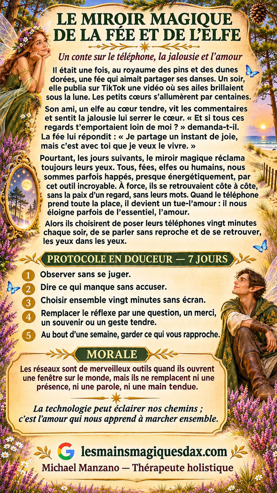

Mes conseils · Conte
Le miroir magique de la fée et de l'elfe
Un conte sur le téléphone, la jalousie et l'amour.
Par Michael Manzano, thérapeute holistique à Dax · 📘 Publié aussi dans le groupe Facebook « Monde féérique et magique, contes et légendes de Bretagne ou d'ailleurs »
Il était une fois, au royaume des pins et des dunes dorées, une fée qui aimait partager ses danses. Un soir, elle publia sur TikTok une vidéo où ses ailes brillaient sous la lune. Les petits cœurs s'allumèrent par centaines.
Son ami, un elfe au cœur tendre, vit les commentaires et sentit la jalousie lui serrer le cœur. « Et si tous ces regards t'emportaient loin de moi ? » demanda-t-il. La fée lui répondit : « Je partage un instant de joie, mais c'est avec toi que je veux le vivre. »
Pourtant, les jours suivants, le miroir magique réclama toujours leurs yeux. Tous, fées, elfes ou humains, nous sommes parfois happés, presque énergétiquement, par cet outil incroyable. À force, ils se retrouvaient côte à côte, sans la paix d'un regard, sans leurs mots. Quand le téléphone prend toute la place, il devient un tue-l'amour : il nous éloigne parfois de l'essentiel, l'amour.
Alors ils choisirent de poser leurs téléphones vingt minutes chaque soir, de se parler sans reproche et de se retrouver, les yeux dans les yeux.
Protocole en douceur — 7 jours
Observer sans se juger.
Dire ce qui manque sans accuser.
Choisir ensemble vingt minutes sans écran.
Remplacer le réflexe par une question, un merci, un souvenir ou un geste tendre.
Au bout d'une semaine, garder ce qui vous rapproche.
Morale
Les réseaux sont de merveilleux outils quand ils ouvrent une fenêtre sur le monde, mais ils ne remplacent ni une présence, ni une parole, ni une main tendue.
La technologie peut éclairer nos chemins ;
c'est l'amour qui nous apprend à marcher ensemble.

